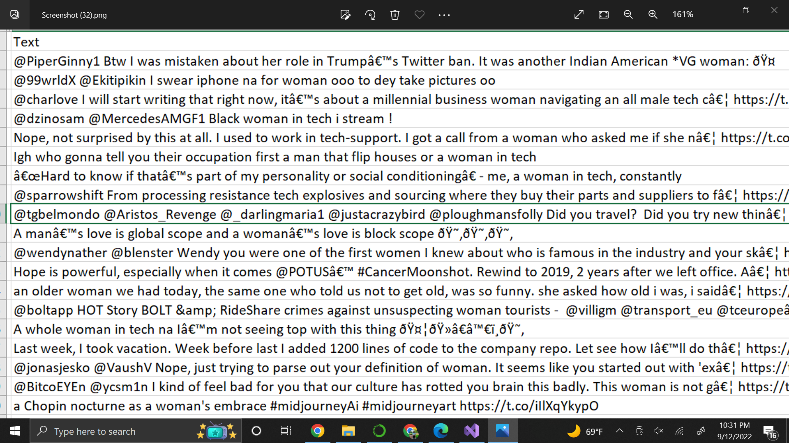
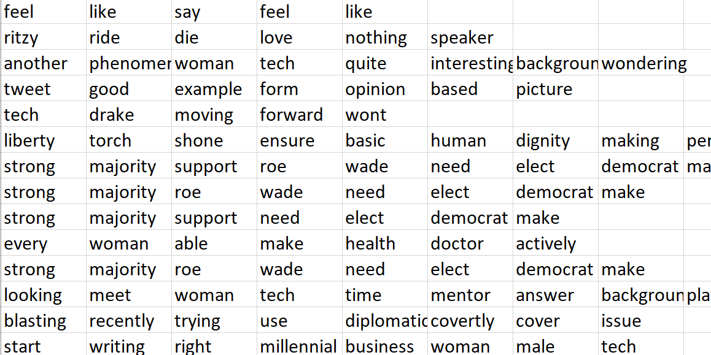

Data Cleaning and Preparation
Data Collection:
The data is extracted from twitter.
In the twitter data, we can get many objects related to a user, tweets on various subjects, hashtags and more.
Below are the API keys provided by twitter and tweets can be extracted by authenticating these keys.
Twitter API format:
- consumer_key = ' '
- consumer_secret = ' '
- access_token = ' '
- access_token_secret = ' '
To get started with Twitter API, we first required to create a twitter developer account and follow several authentication processes,
all of which will be thoroughly detailed in this
article.
Data Cleaning:
As tweets ar text data, cleaning is a bit crucial. There are few steps in cleaning the text data.
- Lowecasing the data.
- Removing Puncuatations.
- Removing Numbers.
- Removing extra space.
- Replacing the repetitions of punctations.
- Removing Emojis.
- Removing emoticons.
- Removing Contractions.
- Removing stopper words
- Removing not meaningful words
This project is mostly based on text data, cleaning part is concentrated on text data itself.
Before:

Links to raw, cleaned and transactional data.
After:

Data Preparation:
Taking only the text column and exploding the dataframe to create transaction based data especially for ARM.
Visualization: wordcloud
Men in technology:
Link to the data cleaning and prepapration code in Python is here
Woman in technology: